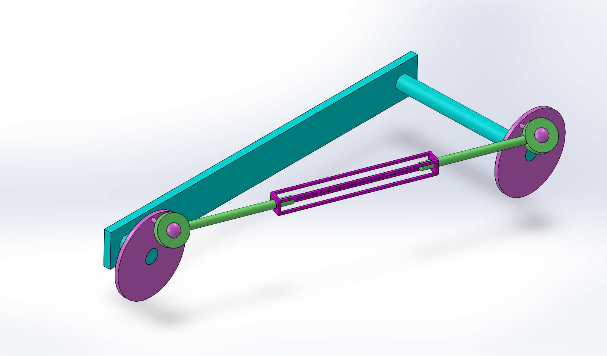

Connecting Rod Assembly
The connecting rod assembly demonstrates motion transfer between rotating
and reciprocating components, widely used in engines and machinery.
Designed in SolidWorks, this model applies constraints
and mates to simulate realistic mechanical motion.

Design Details
- Software Used: SolidWorks
- Features Applied: Assembly mates, pin joints, motion simulation
- Applications: Demonstrates crank-slider motion;
concept used in internal combustion engines and linkages
← Back to Assemblies